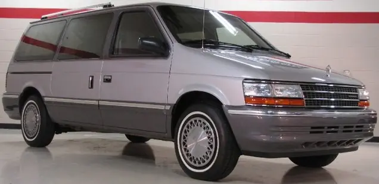

Chrysler minivans
Chrysler minivans (RT) · 2007–2020
Abstract
This generation of the Chrysler minivans was built 2007–2020 in Windsor, Ontario, Canada (Chrysler Canada: 2007–2020), St. Louis, Missouri, United States (2007–2008). Body styles: 4-door minivan. Layout: Front-engine, front-wheel drive. Designed by Ralph Gilles.
1Specifications
| Production | 2007–2020 |
|---|---|
| Model years | 2008–2020 (Grand Caravan)2009–2014 (Routan)2008–2016 (Town & Country) |
| Assembly | Windsor, Ontario, Canada (Chrysler Canada: 2007–2020)St. Louis, Missouri, United States (2007–2008) |
| Designer | Ralph Gilles |
| Body style | 4-door minivan |
| Layout | Front-engine, front-wheel drive |
| Platform | Chrysler RT platform |
| Engine | 2.8 L 176 hp CRD I4 diesel (export only)3.3 L 175 hp V63.8 L 197 hp V64.0 L 251 hp V63.6 L 283 hp V6 |
| Transmission | 4-speed automatic (3.3 engine)62TE 6-speed automatic (3.6, 3.8, 4.0 engines) |
| Wheelbase | 121.2 in |
| Length | 202.5 in202.8 in (Ram C/V) |
| Width | 78.7 in76.9 in (Routan) |
| Height | 68.9 in69.0 in (Ram C/V) |
| Weight | 4306 lb |
| Also called | Dodge Grand CaravanChrysler Town & CountryRam C/V TradesmanChrysler VoyagerLancia VoyagerVolkswagen Routan |
| Predecessor | Chrysler minivans (RS)Lancia Phedra/Lancia Zeta (For Lancia Voyager) |
| Successor | Chrysler PacificaChrysler Voyager (RU)Chrysler Grand Caravan (Canada)Ram ProMaster City (For Cargo Van) |
2Previous generations




3Generation by generation
Length +15% from the first to the last
Chrysler minivans (AS) 19904,468 mm
Chrysler minivans (NS) 19954,732 mm
Chrysler minivans (RS) 20004,803 mm
Chrysler minivans (RT) 20075,144 mm
Weight +30% from the first to the last
Chrysler minivans (AS) 19901,499 kg
Chrysler minivans (NS) 19951,600 kg
Chrysler minivans (RT) 20071,953 kg